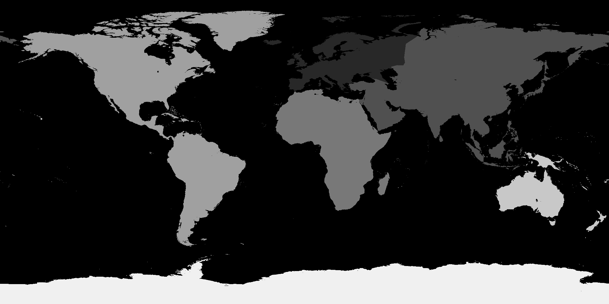
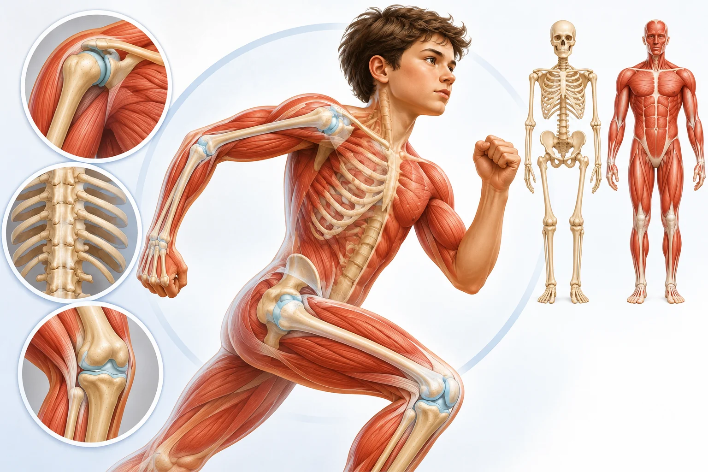

Atlas de estudio
Un mundo de cosas por descubrir.
¿Qué quieres aprender hoy?

EL MUNDO QUE NOS RODEA
Geografía
Viaja por los mapas, explora el relieve y descubre lugares en el globo terráqueo.
Explorar los mapas
CONOCE TU CUERPO · 5.º PRIMARIA
Aparato locomotor
Descubre tus huesos y músculos, cómo te mueves y cómo cuidar tu cuerpo.
Empezar a descubrirA tu ritmo, sin cuenta. Aprende, practica y vuelve cuando quieras.